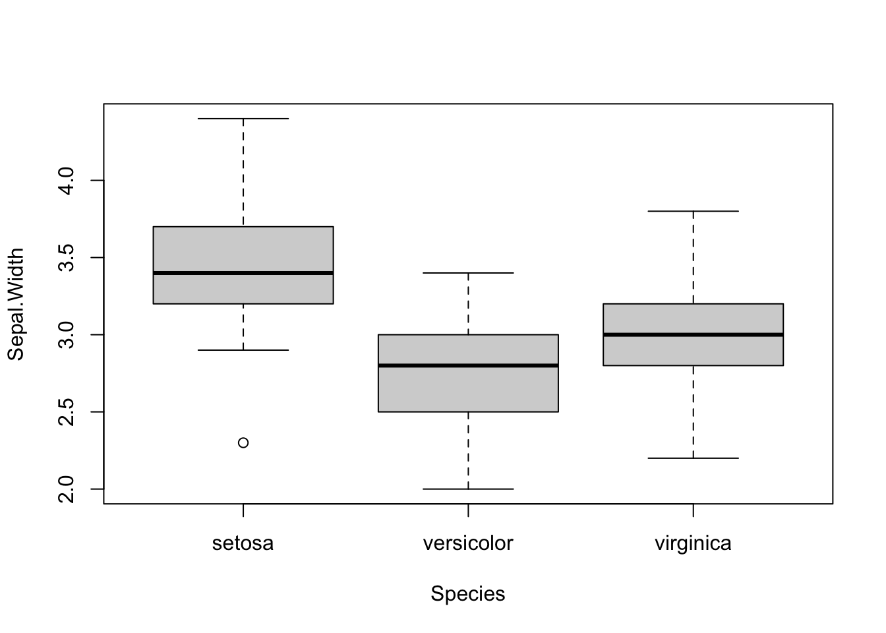

![]()
#paquetes R a utilizar
library(tidyverse)
library(easyanova)
library(car)
library(lattice)
library(multcomp)
library(ggpubr)
library(rstatix)Introducción
El análisis de varianza es una prueba estadística para determinar si dos o más medias poblacionales son diferentes entre si. En otras palabras, se usa para comparar dos o más grupos para ver si son significativamente diferentes.
En el resto del post lo comentaremos desde un punto de vista más práctico y en particular abordaremos los siguientes puntos:
- el objetivo del análisis de varianza y cuándo debe usarse
- cómo realizar el ANVA en R
- cómo interpretar los resultados del ANVA
- comprender la noción de prueba de promedios e interpretar los resultados
- cómo visualizar los resultados de ANVA y pruebas de promedio
Datos
El dato que se utilizará es iris, que se encuentra en la base de datos de R. Estos datos como tratamientos tienen tres especies (setosa, versicolor y virginica) y cuatro variables (Sepal.Length, Sepal.Width, Petal.Length y Petal.Width) cuantitativas
La librería de easyanova es un paquete para realizar análisis de experimentos agrícolas y animales. Las funciones de esta librería son fáciles de usar. Realiza análisis en varios diseños, con datos balanceados y no balanceados.
Salida de datos a utilizar:
#datos
tibble(iris)# A tibble: 150 × 5
Sepal.Length Sepal.Width Petal.Length Petal.Width Species
<dbl> <dbl> <dbl> <dbl> <fct>
1 5.1 3.5 1.4 0.2 setosa
2 4.9 3 1.4 0.2 setosa
3 4.7 3.2 1.3 0.2 setosa
4 4.6 3.1 1.5 0.2 setosa
5 5 3.6 1.4 0.2 setosa
6 5.4 3.9 1.7 0.4 setosa
7 4.6 3.4 1.4 0.3 setosa
8 5 3.4 1.5 0.2 setosa
9 4.4 2.9 1.4 0.2 setosa
10 4.9 3.1 1.5 0.1 setosa
# … with 140 more rows#inspección de datos
p <- ggplot(iris) +
aes(x = Species, y = Sepal.Width, color = Species) +
geom_jitter() +
theme(legend.position = "none")
library(plotly)
fig <- ggplotly(p)
figObjetivo del ANVA
Como se mencionó en la introducción, el ANVA se usa para comparar grupos (en la práctica, 3 o más grupos). De manera más general, se utiliza para:
- estudiar si las mediciones son similares en diferentes modalidades (también llamadas niveles o tratamientos en el contexto de ANVA) de una variable categórica
- comparar el impacto de los diferentes niveles de una variable categórica sobre una variable cuantitativa
- explicar una variable cuantitativa basada en una variable cualitativa
Supuestos subyacentes de ANVA
Como ocurre con muchas pruebas estadísticas, hay algunas suposiciones que deben cumplirse para poder interpretar los resultados. Cuando no se cumplen uno o varios supuestos, aunque técnicamente es posible realizar estas pruebas, sería incorrecto interpretar los resultados y confiar en las conclusiones.
1. Tipo de variable
Las variables dependientes Sepal.Length, Sepal.Width, Petal.Length y Petal.Width es una variable cuantitativa y la variable independiente Species es cualitativa (con 3 niveles correspondientes a las 3 especies). Así que tenemos una combinación de los dos tipos de variables y se cumple este supuesto.
2. Independencia
Se asume la independencia de las observaciones ya que los datos se han recopilado de una parte de la población seleccionada al azar y las mediciones dentro y entre las 3 muestras no están relacionadas.
El supuesto de independencia se verifica con mayor frecuencia con base en el diseño del experimento y en el buen control de las condiciones experimentales, como es el caso aquí. Sin embargo, si realmente desea probarlo de manera más formal, puede probarlo mediante una prueba estadística: la prueba de Durbin-Watson (en R: durbinWatsonTest(res_lm) donde res_lm es un modelo lineal). La hipótesis nula de esta prueba especifica un coeficiente de autocorrelación = 0, mientras que la hipótesis alternativa especifica un coeficiente de autocorrelación ≠ 0.
3. Normalidad
Recuerde que la normalidad de los residuos se puede probar visualmente mediante un histograma y un gráfico QQ, y/o formalmente mediante una prueba de normalidad (prueba de Shapiro-Wilk, por ejemplo).
Antes de verificar el supuesto de normalidad, primero debemos calcular el ANVA. Luego guardamos los resultados en res_aov:
res_aov <- aov(Sepal.Width ~ Species,
data = iris
)Ahora podemos comprobar la normalidad visualmente:
par(mfrow = c(1, 2)) # combine plots
# histogram
hist(res_aov$residuals)
# QQ-plot
qqPlot(res_aov$residuals,
id = FALSE # id = FALSE to remove point identification
)A partir del histograma y el gráfico QQ anteriores, ya podemos ver que el supuesto de normalidad parece cumplirse. De hecho, el histograma forma aproximadamente una curva de campana, lo que indica que los residuos siguen una distribución normal. Además, los puntos en las gráficas QQ siguen aproximadamente la línea recta y la mayoría de ellos están dentro de las bandas de confianza, lo que también indica que los residuos siguen aproximadamente una distribución normal.
Algunos investigadores se detienen aquí y asumen que se cumple la normalidad, mientras que otros también prueban la suposición a través de una prueba estadística formal. Es su elección probarlo (i) solo visualmente, (ii) solo a través de una prueba de normalidad, o (iii) tanto visualmente como a través de una prueba de normalidad. Sin embargo, tenga en cuenta los dos puntos siguientes:
- ANVA es bastante robusto a pequeñas desviaciones de la normalidad. Esto significa que no es un problema (desde la perspectiva de la interpretación de los resultados de ANVA) si un pequeño número de puntos se desvía ligeramente de la normalidad,
- Las pruebas de normalidad son a veces bastante conservadoras, lo que significa que la hipótesis nula de normalidad puede rechazarse debido a una desviación limitada de la normalidad. Este es especialmente el caso con muestras grandes, ya que la potencia de la prueba aumenta con el tamaño de la muestra.
En la práctica, se tiende a preferir el (i) enfoque visual solamente, pero nuevamente, esto es una cuestión de elección personal y también depende del contexto del análisis. Tambien, puede utilizar la prueba de Shapiro-Wilk o la prueba de Kolmogorov-Smirnov, entre otras.
4. Igualdad de varianzas - homogeneidad
Suponiendo que los residuos siguen una distribución normal, ahora es el momento de comprobar si las varianzas son iguales entre especies o no. El resultado tendrá un impacto en si usamos el ANVA o la prueba de Welch.
Esto se puede verificar nuevamente visualmente, a través de una gráfica de caja o gráfica de puntos, o más formalmente a través de una prueba estadística (la prueba de Levene, entre otras).
Visualmente tenemos:
# Boxplot
boxplot(Sepal.Width ~ Species,
data = iris
)
# Dotplot
dotplot(Sepal.Width ~ Species,
data = iris
)Tanto la gráfica de boxplot como la gráfica de puntos muestran una variación similar para las diferentes especies. En el boxplot, esto se puede ver por el hecho de que las cajas y los bigotes tienen un tamaño comparable para todas las especies. Hay un par de valores atípicos como lo muestran los puntos fuera de los bigotes, pero esto no cambia el hecho de que la dispersión es más o menos la misma entre las diferentes especies.
En la gráfica de puntos, esto se puede ver por el hecho de que los puntos para las 3 especies tienen más o menos el mismo rango, un signo de la dispersión y, por lo tanto, la varianza es similar.
Al igual que el supuesto de normalidad, si cree que el enfoque visual no es suficiente, puede probar formalmente la igualdad de las varianzas con una prueba de Levene o de Bartlett. Observe que la prueba de Levene es menos sensible a las desviaciones de la distribución normal que la prueba de Bartlett.
Las hipótesis nula y alternativa para ambas pruebas son:
- H0: las variaciones son iguales
- H1: al menos una varianza es diferente
En R, la prueba de Levene se puede realizar gracias a la función leveneTest() del paquete {car}:
# Levene's test
leveneTest(Sepal.Width ~ Species,
data = iris
)Levene's Test for Homogeneity of Variance (center = median)
Df F value Pr(>F)
group 2 0.5902 0.5555
147 Siendo el p-valor mayor que el nivel de significancia de 0.05, no rechazamos la hipótesis nula, por lo que no podemos rechazar la hipótesis de que las varianzas son iguales entre especies (p-valor = 0.556).
Este resultado también está en línea con el enfoque visual, por lo que la homogeneidad de las variaciones se cumple tanto visual como formalmente.
Análisis de varianza en R
El ANVA puede ayudarnos a hacer inferencias sobre la población dada la muestra en cuestión y ayudarnos a responder la pregunta de investigación “¿Existe diferencia en ancho de sépalo para las 3 especies?”.
El ANVA en R se puede realizar de varias formas, de las cuales tres se presentan a continuación:
a). Con la función oneway.test():
# primer metodo:
oneway.test(Sepal.Width ~ Species,
data = iris,
var.equal = TRUE # asumiendo varianzas iguales
)
One-way analysis of means
data: Sepal.Width and Species
F = 49.16, num df = 2, denom df = 147, p-value < 2.2e-16b). Con las funciones de summary() y aov():
# 2nd method:
res_aov <- aov(Sepal.Width ~ Species,
data = iris
)
summary(res_aov) Df Sum Sq Mean Sq F value Pr(>F)
Species 2 11.35 5.672 49.16 <2e-16 ***
Residuals 147 16.96 0.115
---
Signif. codes: 0 '***' 0.001 '**' 0.01 '*' 0.05 '.' 0.1 ' ' 1Como puede ver en los dos resultados anteriores, la estadística de prueba (F = en el primer método y el valor F en el segundo) y el p-valor (p-valor en el primer método y Pr (> F) en el segundo) son exactamente iguales para ambos métodos, lo que significa que en caso de variaciones iguales, los resultados y las conclusiones no cambiarán.
La ventaja del primer método es que es fácil cambiar del ANVA (utilizado cuando las variaciones son iguales) a la prueba de Welch (utilizado cuando las variaciones son desiguales). Esto se puede hacer reemplazando nvar.equal = TRUE por var.equal = FALSE, como se presenta a continuación:
oneway.test(Sepal.Width ~ Species,
data = iris,
var.equal = FALSE # asumiendo variaciones desiguales
)
One-way analysis of means (not assuming equal variances)
data: Sepal.Width and Species
F = 45.012, num df = 2.000, denom df = 97.402, p-value = 1.433e-14Sin embargo, la ventaja del segundo método es que:
- Se imprime la tabla ANVA completa (con grados de libertad, cuadrados medios, etc.), lo que puede ser de interés en algunos casos (teóricos).
- los resultados del ANVA (
res_aov) se pueden guardar para su uso posterior (especialmente útil para pruebas de promedio)
Interpretaciones de los resultados del ANVA
Dado que el p-valor es menor que 0.05, rechazamos la hipótesis nula, por lo que rechazamos la hipótesis de que todas las medias son iguales. Por tanto, podemos concluir que al menos una especie es diferente a las otras en términos del ancho de sépalo (p-valor <2.2e-16).
¿Que sigue?
Si no se rechaza la hipótesis nula (p-valor ≥ 0,05), significa que no rechazamos la hipótesis de que todos los grupos son iguales. El ANVA más o menos se detiene aquí. Por supuesto, se pueden realizar otros tipos de análisis, pero, dados los datos disponibles, no pudimos probar que al menos un grupo fuera diferente, por lo que generalmente no avanzamos más con el ANVA.
Por el contrario, si y solo si se rechaza la hipótesis nula (como es nuestro caso ya que el p-valor < 0.05), probamos que al menos un grupo es diferente. Podemos decidir detenernos aquí si solo estamos interesados en probar si todas las especies son iguales en términos de ancho de sépalo.
Pero la mayoría de las veces, cuando demostramos gracias a un ANVA que al menos un grupo es diferente, también nos interesa saber cuál es diferente. Para probar esto, necesitamos usar otros tipos de prueba, denominados pruebas de promedio o pruebas de comparación múltiple por pares. Esta familia de pruebas estadísticas es el tema de las siguientes secciones.
Pruebas de promedio en R y su interpretación
Las pruebas de promedio son una familia de pruebas estadísticas, por lo que hay varias. Las más utilizadas son las pruebas Tukey HSD y Dunnett:
- Tukey HSD se utiliza para comparar todos los grupos entre sí (por lo que todas las posibles comparaciones de 2 grupos).
- Dunnett se utiliza para hacer comparaciones con un grupo de referencia. Por ejemplo, considere 2 grupos de tratamiento y un grupo de control. Si solo desea comparar los 2 grupos de tratamiento con respecto al grupo de control y no desea comparar los 2 grupos de tratamiento entre sí, se prefiere la prueba de Dunnett.
Ambas pruebas se presentan en las siguientes secciones.
Prueba de Tukey HSD
En nuestro caso, dado que no existe una especie de “referencia” y nos interesa comparar todas las especies, vamos a utilizar la prueba de Tukey HSD.
En R, la prueba de Tukey HSD se realiza de la siguiente manera. Aquí es donde el segundo método para realizar el ANVA resulta útil porque los resultados (res_aov) se reutilizan para la prueba de promedios:
# Prueba de Tukey HSD:
post_test <- glht(res_aov,
linfct = mcp(Species = "Tukey")
)
summary(post_test)
Simultaneous Tests for General Linear Hypotheses
Multiple Comparisons of Means: Tukey Contrasts
Fit: aov(formula = Sepal.Width ~ Species, data = iris)
Linear Hypotheses:
Estimate Std. Error t value Pr(>|t|)
versicolor - setosa == 0 -0.65800 0.06794 -9.685 < 1e-04 ***
virginica - setosa == 0 -0.45400 0.06794 -6.683 < 1e-04 ***
virginica - versicolor == 0 0.20400 0.06794 3.003 0.00871 **
---
Signif. codes: 0 '***' 0.001 '**' 0.01 '*' 0.05 '.' 0.1 ' ' 1
(Adjusted p values reported -- single-step method)En el resultado de la prueba Tukey HSD, nos interesa la tabla que se muestra después de las Hipótesis lineales: más precisamente, en la primera y última columna de la tabla. La primera columna muestra las comparaciones que se han realizado; la última columna (Pr(>|t|)) muestra los p-valores ajustados para cada comparación (con la hipótesis nula siendo los dos grupos iguales y la hipótesis alternativa siendo los dos grupos diferentes).
Son estos p-valores ajustados los que se utilizan para probar si dos grupos son significativamente diferentes o no. En nuestro ejemplo, probamos:
- versicolor vs setosa (línea
versicolor - setosa == 0) - virginica vs setosa (línea
virginica - setosa == 0) - virginica vs versicolor (línea
virginica - versicolor == 0)
Los tres p-valores son menores que 0.05, por lo que rechazamos la hipótesis nula para todas las comparaciones, lo que significa que todas las especies son significativamente diferentes en términos de ancho de sépalo.
Tenga en cuenta que la prueba Tukey HSD también se puede realizar en R con la función TukeyHSD():
TukeyHSD(res_aov) Tukey multiple comparisons of means
95% family-wise confidence level
Fit: aov(formula = Sepal.Width ~ Species, data = iris)
$Species
diff lwr upr p adj
versicolor-setosa -0.658 -0.81885528 -0.4971447 0.0000000
virginica-setosa -0.454 -0.61485528 -0.2931447 0.0000000
virginica-versicolor 0.204 0.04314472 0.3648553 0.0087802Con este código, es la columna p adj (también la última columna) la que interesa. Tenga en cuenta que las conclusiones son las mismas que las anteriores: todas las especies son significativamente diferentes en términos de ancho de sépalo.
Visualización de ANVA y pruebas de promedio
Para realizar de forma más fácil un análisis de varianza, se puede usar la librería easyanova para analizar diferentes diseños experimentales.
Análisis de varianza con easyanova
Para proceder con ANVA los datos de iris se selecciona y ordena para dar uso con el paquete easyanova.
fsdata <- iris %>%
dplyr::select(Species, Sepal.Width)
tibble(fsdata)# A tibble: 150 × 2
Species Sepal.Width
<fct> <dbl>
1 setosa 3.5
2 setosa 3
3 setosa 3.2
4 setosa 3.1
5 setosa 3.6
6 setosa 3.9
7 setosa 3.4
8 setosa 3.4
9 setosa 2.9
10 setosa 3.1
# … with 140 more rows# Análisis de varianza para DCA
r1 <- ea1(data = fsdata, # Base de datos
design = 1, # Diseño experimental: 1=DCA, 2=DBCA, etc.
alpha = 0.05) # Probabilidad estadísticar1$`Analysis of variance`
df type I SS mean square F value p>F
treatments 2 11.3449 5.6725 49.16 <0.001
Residuals 147 16.9620 0.1154 - -
$Means
treatment mean standard.error tukey snk duncan t scott_knott
1 setosa 3.428 0.048 a a a a a
2 virginica 2.974 0.048 b b b b b
3 versicolor 2.770 0.048 c c c c c
$`Multiple comparison test`
pair contrast p(tukey) p(snk) p(duncan) p(t)
1 setosa - virginica 0.454 0.0000 0.0000 0.0000 0.0000
2 setosa - versicolor 0.658 0.0000 0.0000 0.0000 0.0000
3 virginica - versicolor 0.204 0.0087 0.0031 0.0031 0.0031
$`Residual analysis`
$`Residual analysis`$`residual analysis`
values
p.value Shapiro-Wilk test 0.3230
p.value Bartlett test 0.3515
coefficient of variation (%) 11.1100
first value most discrepant 42.0000
second value most discrepant 16.0000
third value most discrepant 118.0000
$`Residual analysis`$residuals
1 2 3 4 5 6 7 8 9 10 11
0.072 -0.428 -0.228 -0.328 0.172 0.472 -0.028 -0.028 -0.528 -0.328 0.272
12 13 14 15 16 17 18 19 20 21 22
-0.028 -0.428 -0.428 0.572 0.972 0.472 0.072 0.372 0.372 -0.028 0.272
23 24 25 26 27 28 29 30 31 32 33
0.172 -0.128 -0.028 -0.428 -0.028 0.072 -0.028 -0.228 -0.328 -0.028 0.672
34 35 36 37 38 39 40 41 42 43 44
0.772 -0.328 -0.228 0.072 0.172 -0.428 -0.028 0.072 -1.128 -0.228 0.072
45 46 47 48 49 50 51 52 53 54 55
0.372 -0.428 0.372 -0.228 0.272 -0.128 0.430 0.430 0.330 -0.470 0.030
56 57 58 59 60 61 62 63 64 65 66
0.030 0.530 -0.370 0.130 -0.070 -0.770 0.230 -0.570 0.130 0.130 0.330
67 68 69 70 71 72 73 74 75 76 77
0.230 -0.070 -0.570 -0.270 0.430 0.030 -0.270 0.030 0.130 0.230 0.030
78 79 80 81 82 83 84 85 86 87 88
0.230 0.130 -0.170 -0.370 -0.370 -0.070 -0.070 0.230 0.630 0.330 -0.470
89 90 91 92 93 94 95 96 97 98 99
0.230 -0.270 -0.170 0.230 -0.170 -0.470 -0.070 0.230 0.130 0.130 -0.270
100 101 102 103 104 105 106 107 108 109 110
0.030 0.326 -0.274 0.026 -0.074 0.026 0.026 -0.474 -0.074 -0.474 0.626
111 112 113 114 115 116 117 118 119 120 121
0.226 -0.274 0.026 -0.474 -0.174 0.226 0.026 0.826 -0.374 -0.774 0.226
122 123 124 125 126 127 128 129 130 131 132
-0.174 -0.174 -0.274 0.326 0.226 -0.174 0.026 -0.174 0.026 -0.174 0.826
133 134 135 136 137 138 139 140 141 142 143
-0.174 -0.174 -0.374 0.026 0.426 0.126 0.026 0.126 0.126 0.126 -0.274
144 145 146 147 148 149 150
0.226 0.326 0.026 -0.474 0.026 0.426 0.026
$`Residual analysis`$`standardized residuals`
1 2 3 4 5 6
0.21339641 -1.26852308 -0.67575529 -0.97213918 0.50978030 1.39893200
7 8 9 10 11 12
-0.08298749 -0.08298749 -1.56490698 -0.97213918 0.80616420 -0.08298749
13 14 15 16 17 18
-1.26852308 -1.26852308 1.69531589 2.88085148 1.39893200 0.21339641
19 20 21 22 23 24
1.10254810 1.10254810 -0.08298749 0.80616420 0.50978030 -0.37937139
25 26 27 28 29 30
-0.08298749 -1.26852308 -0.08298749 0.21339641 -0.08298749 -0.67575529
31 32 33 34 35 36
-0.97213918 -0.08298749 1.99169979 2.28808369 -0.97213918 -0.67575529
37 38 39 40 41 42
0.21339641 0.50978030 -1.26852308 -0.08298749 0.21339641 -3.34321036
43 44 45 46 47 48
-0.67575529 0.21339641 1.10254810 -1.26852308 1.10254810 -0.67575529
49 50 51 52 53 54
0.80616420 -0.37937139 1.27445076 1.27445076 0.97806686 -1.39300432
55 56 57 58 59 60
0.08891517 0.08891517 1.57083466 -1.09662042 0.38529907 -0.20746873
61 62 63 64 65 66
-2.28215601 0.68168296 -1.68938822 0.38529907 0.38529907 0.97806686
67 68 69 70 71 72
0.68168296 -0.20746873 -1.68938822 -0.80023652 1.27445076 0.08891517
73 74 75 76 77 78
-0.80023652 0.08891517 0.38529907 0.68168296 0.08891517 0.68168296
79 80 81 82 83 84
0.38529907 -0.50385263 -1.09662042 -1.09662042 -0.20746873 -0.20746873
85 86 87 88 89 90
0.68168296 1.86721855 0.97806686 -1.39300432 0.68168296 -0.80023652
91 92 93 94 95 96
-0.50385263 0.68168296 -0.50385263 -1.39300432 -0.20746873 0.68168296
97 98 99 100 101 102
0.38529907 0.38529907 -0.80023652 0.08891517 0.96621151 -0.81209188
103 104 105 106 107 108
0.07705981 -0.21932408 0.07705981 0.07705981 -1.40485967 -0.21932408
109 110 111 112 113 114
-1.40485967 1.85536320 0.66982761 -0.81209188 0.07705981 -1.40485967
115 116 117 118 119 120
-0.51570798 0.66982761 0.07705981 2.44813099 -1.10847578 -2.29401137
121 122 123 124 125 126
0.66982761 -0.51570798 -0.51570798 -0.81209188 0.96621151 0.66982761
127 128 129 130 131 132
-0.51570798 0.07705981 -0.51570798 0.07705981 -0.51570798 2.44813099
133 134 135 136 137 138
-0.51570798 -0.51570798 -1.10847578 0.07705981 1.26259540 0.37344371
139 140 141 142 143 144
0.07705981 0.37344371 0.37344371 0.37344371 -0.81209188 0.66982761
145 146 147 148 149 150
0.96621151 0.07705981 -1.40485967 0.07705981 1.26259540 0.07705981 En la salida se puede observar el resultado de análisis de varianza, prueba de promedios y comparación múltiple de medias. Estas salidas son muy fáciles de obtener y poder interpretar las mismas. Asimismo, se puede verificar la normalidad y coeficiente de variación de los datos.
Visualización de la prueba de promedios
Si está interesado en incluir resultados de ANVA y pruebas de promedio directamente en los boxplot, aquí hay un fragmento de código que puede ser de su interés:
#paquete para p-valor en la visualización de prueba de promedios
dat <- iris
# Editar desde aquí
x <- which(names(dat) == "Species") #variable de agrupación
y <- which(names(dat) == "Sepal.Width")
#variables para la prueba de promedios
#| names(dat) == "Sepal.Length"
#| names(dat) == "Petal.Length"
#| names(dat) == "Petal.Width")
method1 <- "anova" # Una de "anova" o "kruskal.test"
method2 <- "t.test" # Una de "wilcox.test" o "t.test"
my_comparisons <- list(c("setosa", "versicolor"),
c("setosa", "virginica"),
c("versicolor", "virginica"))
# comparaciones para pruebas de promedio
# Editar hasta aquí
# Edit at your own risk
for (i in y) {
for (j in x) {
p <- ggboxplot(dat,
x = colnames(dat[j]), y = colnames(dat[i]),
color = colnames(dat[j]),
legend = "none",
palette = "npg",
add = "jitter"
)
print(
p + stat_compare_means(aes(
label = paste0(..method.., ", p-value = ", ..p.format..)),
method = method1, label.y = max(dat[, i], na.rm = TRUE)
)
+ stat_compare_means(comparisons = my_comparisons,
method = method2, label = "p.format")
# remove if p-value of ANOVA or Kruskal-Wallis test >= alpha
)
}
}Otra opción de gráfica para observar la significancia entre las medias de cada par de especies.
# pairwise comparisons
pwc <- fsdata %>%
pairwise_t_test(
Sepal.Width ~ Species, pool.sd = FALSE,
p.adjust.method = "none"
)
# Visualization: box plots with p-values
pwc <- pwc %>% add_xy_position(x = "Species")
ggboxplot(fsdata, x = "Species", y = "Sepal.Width",
color = "Species",
legend = "none",
add = "jitter") +
stat_pvalue_manual(pwc, hide.ns = TRUE) Conclusión
La figura de prueba de promedios es muy buena opción para incluir en la sección de resultados de los reportes de investigación. La figura incluye el resultado de p-valor del análisis de varianza, además, p-valor para la comparación de medias entre especies o tratamientos de la investigación.
Referencias
- R bloggers 2020. ANOVA in R
- Soetewey A. 2020. How to do a t-test or ANOVA for more than one variable at once in R